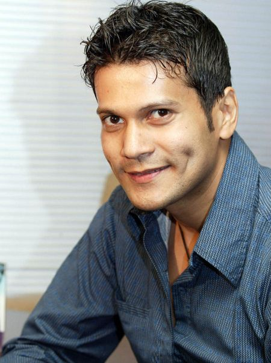

ADAM JORDAN
Through the years at Bates-Masi, he's honed his aesthetic, one that strives for the "crisp clean lines" and "straight-edge" feel of modern architecture, but with materials that have a history .